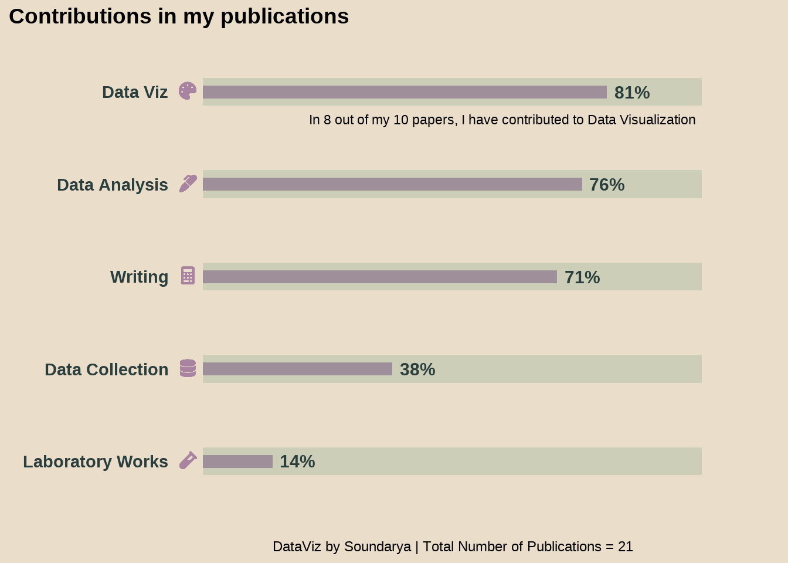

Publications
List of Publications
- Soundararajan S, Viramgami A, Sheth A, Beerappa R, Kalahasthi R, Sampathraju R, Venugopal D, Sarkar K, Balachandar R. Assessing Health Seeking Behaviors and Economic Consequences of Morbidity in Indian Construction Workers: A Multicentre Study. Indian Journal of Occupational and Environmental Medicine. 2023 (In Press)
- Soundararajan S, Mishra SD. Data Management - The first step in Reproducible Research. Indian Journal of Occupational and Environmental Medicine. 2023 (In Press)
- Need for workplace smoking cessation program among public transit drivers: Evidence from a cross-sectional study in a metropolitan city of Western India (Soundararajan et al. 2023)
- High Craving Is Associated with Fewer Abstinent Days and Lesser Time to Relapse During Treatment in Severe Alcohol Use Disorder (Soundararajan and Murthy 2023)
- Validity of point-of-care device for diagnosing anemia in workers exposed to lead (Viramgami et al. 2022)
- Modeling Ability to Resist Alcohol in the Human Laboratory: A Pilot Study (Sloan et al. 2022)
- Elevated Stearoyl-CoA Desaturase 1 Activity Is Associated with Alcohol-Associated Liver Disease (Klepp et al. 2022)
- The Motivation for Alcohol Reward: Predictors of Progressive-Ratio Intravenous Alcohol Self-Administration in Humans (Stangl et al. 2022)
- FAAH and CNR1 Polymorphisms in the Endocannabinoid System and Alcohol-Related Sleep Quality (Soundararajan, Kazmi, et al. 2021)
- Changes in DNA Methylation Persist over Time in Males with Severe Alcohol Use Disorder-a Longitudinal Follow-up Study. (Soundararajan, Agrawal, et al. 2021)
This is my PhD publication which had a very long incubation. However, this inspired me to visualize and I created a timeline for publishing this work here
{kind=link}
This publication gathered media attention as well. The write-up in “The Hindu” - one of the eminent dailies in India can be accessed here
- Docosahexaenoic Acid Supplementation in Age-Related Cognitive Decline: A Systematic Review and Meta-Analysis (Balachandar, Soundararajan, and Bagepally 2020)
- Relation Between Age at First Alcohol Drink & Adult Life Drinking Patterns in Alcohol-Dependent Patients (Soundararajan, Narayanan, Agrawal, Prabhakaran, et al. 2017)
I created graphs for this publication with excel back in 2015. However, after learning R, I upgraded the visualization for this paper. My twitter link for the same is here.
- Personality Profile and Short-Term Treatment Outcome in Patients with Alcohol Dependence: A Study from South India (Soundararajan, Narayanan, Agrawal, and Murthy 2017)
- Manganese- and 1-Methyl-4-Phenylpyridinium-Induced Neurotoxicity Display Differences in Morphological, Electrophysiological and Genome-Wide Alterations: Implications for Idiopathic Parkinson’s Disease (Mythri et al. 2017)
- Vitamin B12 Deficiency: An Important Reversible Co-Morbidity in Neuropsychiatric Manifestations. (Issac et al. 2015)
This is my most-cited paper.
I also visualized how this paper boosted my citation count. View it here
- Services for Enhanced Recovery with Intensive and Continued Engagement (SERWICE): An Outpatient Psychiatric Rehabilitation Model from India (Sivakumar et al. 2014).
References
Balachandar, Rakesh, Soundarya Soundararajan, and Bhavani Shankara Bagepally. 2020. “Docosahexaenoic Acid Supplementation in Age-Related Cognitive Decline: A Systematic Review and Meta-Analysis.” European Journal of Clinical Pharmacology 76 (5): 639–48. https://doi.org/10.1007/s00228-020-02843-x.
Issac, Thomas Gregor, Soundararajan Soundarya, Rita Christopher, and Sadanandavalli Retnaswami Chandra. 2015. “Vitamin B12 Deficiency: An Important Reversible Co-Morbidity in Neuropsychiatric Manifestations.” Indian Journal of Psychological Medicine 37 (1): 26–29. https://doi.org/10.4103/0253-7176.150809.
Klepp, T. D., M. E. Sloan, Soundarya Soundararajan, C. E. Ramsden, R. Cinar, M. L. Schwandt, N. Diazgranados, V. Vatsalya, and V. A. Ramchandani. 2022. “Elevated Stearoyl-CoA Desaturase 1 Activity Is Associated with Alcohol-Associated Liver Disease.” Alcohol, April. https://doi.org/10.1016/j.alcohol.2022.04.001.
Mythri, Rajeswara Babu, Narayana Reddy Raghunath, Santosh Chandrakant Narwade, Mirazkar Dasharatha Rao Pandareesh, Kollarkandi Rajesh Sabitha, Mohamad Aiyaz, Bipin Chand, et al. 2017. “Manganese- and 1-Methyl-4-Phenylpyridinium-Induced Neurotoxicity Display Differences in Morphological, Electrophysiological and Genome-Wide Alterations: Implications for Idiopathic Parkinson’s Disease.” Journal of Neurochemistry 143 (3): 334–58. https://doi.org/10.1111/jnc.14147.
Sivakumar, Thanapal, Soundarya Soundararajan, Avinash Waghmare, Chethan Basavaraj, Sailaxmi Gandhi, Swarupa Udgiri, C. N. Kumar, et al. 2014. “Services for Enhanced Recovery with Intensive and Continued Engagement (SERWICE): An Outpatient Psychiatric Rehabilitation Model from India.” Asian Journal of Psychiatry 11 (October): 84–85. https://doi.org/10.1016/j.ajp.2014.06.024.
Sloan, Matthew E., Joanna R. Sells, Courtney L. Vaughan, James K. Morris, Nancy E. Ortega, Sachin Sundar, Soundarya Soundararajan, et al. 2022. “Modeling Ability to Resist Alcohol in the Human Laboratory: A Pilot Study.” Drug and Alcohol Dependence Reports, October, 100105. https://doi.org/10.1016/j.dadr.2022.100105.
Soundararajan, Soundarya, Arpana Agrawal, Meera Purushottam, Shravanthi Daphne Anand, Bhagyalakshmi Shankarappa, Priyamvada Sharma, Sanjeev Jain, and Pratima Murthy. 2021. “Changes in DNA Methylation Persist over Time in Males with Severe Alcohol Use Disorder-a Longitudinal Follow-up Study.” American Journal of Medical Genetics. Part B, Neuropsychiatric Genetics : The Official Publication of the International Society of Psychiatric Genetics 186 (3): 183–92. https://doi.org/10.1002/ajmg.b.32833.
Soundararajan, Soundarya, Narjis Kazmi, Alyssa T. Brooks, Michael Krumlauf, Melanie L. Schwandt, David T. George, Colin A. Hodgkinson, Gwenyth R. Wallen, and Vijay A. Ramchandani. 2021. “FAAH and CNR1 Polymorphisms in the Endocannabinoid System and Alcohol-Related Sleep Quality.” Frontiers in Psychiatry 12: 1504. https://doi.org/10.3389/fpsyt.2021.712178.
Soundararajan, Soundarya, and Pratima Murthy. 2023. “High Craving Is Associated with Fewer Abstinent Days and Lesser Time to Relapse During Treatment in Severe Alcohol Use Disorder.” Indian Journal of Psychiatry 65 (3). https://journals.lww.com/indianjpsychiatry/Fulltext/2023/65030/High_craving_is_associated_with_fewer_abstinent.4.aspx.
Soundararajan, Soundarya, Gitanjali Narayanan, Arpana Agrawal, and Pratima Murthy. 2017. “Personality Profile and Short-Term Treatment Outcome in Patients with Alcohol Dependence: A Study from South India.” Indian Journal of Psychological Medicine 39 (2): 169–75. https://doi.org/10.4103/0253-7176.203127.
Soundararajan, Soundarya, Gitanjali Narayanan, Arpana Agrawal, Dorairaj Prabhakaran, and Pratima Murthy. 2017. “Relation Between Age at First Alcohol Drink & Adult Life Drinking Patterns in Alcohol-Dependent Patients.” The Indian Journal of Medical Research 146 (5): 606–11. https://doi.org/10.4103/ijmr.IJMR_1363_15.
Soundararajan, Soundarya, Ankit Sheth, Mihir Rupani, Rakesh Balachandar, and Ankit Viramgami. 2023. “Need for Workplace Smoking Cessation Program Among Public Transit Drivers: Evidence from a Cross-Sectional Study in a Metropolitan City of Western India.” Lung India 40 (6): 496–501. https://doi.org/10.4103/lungindia.lungindia_137_23.
Stangl, Bethany L., Nia D. Byrd, Soundarya Soundararajan, Martin H. Plawecki, Sean O’Connor, and Vijay A. Ramchandani. 2022. “The Motivation for Alcohol Reward: Predictors of Progressive-Ratio Intravenous Alcohol Self-Administration in Humans.” JoVE, e63576. https://doi.org/10.3791/63576.
Viramgami, Ankit, Soundarya Soundarajan, Ankit Sheth, and Kuldip Upadhyay. 2022. “Validity of Point-of-Care Device for Diagnosing Anemia in Workers Exposed to Lead.” Indian Journal of Community Health 34 (4): 573–76. https://doi.org/10.47203/IJCH.2022.v34i04.023.